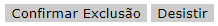

Guia de Estilo
Trata-se de um registro das principais decisões de design tomadas, de forma que elas não se percam, isto é, sejam efetivamente incorporadas no produto final. Guias de estilo servem de ferramenta de comunicação entre os membros da equipe de design e também com a equipe de desenvolvimento.
1. Introdução
1.1. Objetivo do guia de estilo
O objetivo desse guia é registrar os padrões e decisões de design adotadas no site Estagiarios.com, mais especificamente do módulo de estudantes e da página inicial do site. Dessa forma, permitindo que as decisões de design possam ser facilmente consultadas e reutilizadas nas propostas de melhoria e também na confecção de protótipos.
1.2. Organização e conteúdo do guia de estilo
Esse guia é estruturado nos seguintes tópicos: 1. Introdução; 2. Resultados de Análise; 3. Elementos de Interface; 4. Elementos de Interação; 5. Elementos de Ação; 6. Vocabulário e Padrões.
1.3. Público-alvo do guia de estilos
O público-alvo é nosso próprio grupo.
1.4. Como manter o guia
Qualquer modificação/evolução deve ser notificada e também incluída no histórico de versão do documento.
2. Resultados de análise
2.1. Descrição do ambiente de trabalho do usuário
Estagiarios.com é um sistema web, potanto, o ambiente de trabalho do usuário é um navegador(broswer). A partir do navegador, o usuário terá a acesso aos módulos do site(Estudante, Empresa, Profissional Liberal e Escola), bem como as funcionalidades/recursos disponíveis para cada módulo.
3. Elementos de interface
3.1. Disposição espacial e grid
Página Inicial do Site
Módulo Estudante
3.2. Janelas
O site possui diversas janelas, mas será priorizado, conforme citado anteriormente, o módulo de estudante e a página inicial do site.
Página Inicial do Site

Módulo Estudante
3.3. Tipografia
O tamanho da fonte varia entre os seguintes valores: 8pt, 9pt, 10pt e 12pt. Além disso, é aplicado underline para os textos que representam alguma ação no site (links textuais clicáveis).
Fonte Principal (Verdana)
Fonte Secundária (Arial)
3.4. Símbolos não tipográficos
| Símbolo | Uso |
|---|---|
| Utilizado para a impressão de algum documento (como o currículo) | |
 |
Utilizado para redirecionar ao site do Correios para consulta de CEP |
 |
Utilizado para redirecionar a uma página para enviar um e-mail de indicação |
| Utilizado em uma checklist | |
 |
Utilizado para compartilhar algumas páginas nas redes sociais |
3.5. Cores
As cores utilizadas no site são:
- #FFC20F, aplicada em contextos relacionados ao módulo de Escolas;
- #6E3795, aplicada em contextos relacionados ao módulo de Empresas;
- #F68121, aplicada em contextos relacionados ao módulo de Estudantes;
- #BDD630, aplicada em contextos relacionados ao módulo de Profissionais Liberais.
3.6. Animações
O site não possui animações.
4. Elementos de interação
Os principais elementos de interação do site são:
- Botões;
- Links textuais clicáveis;
- Cores específicas para cada tipo de usuário.
Ressaltando que haverá foco no módulo de ESTUDANTE, visto que é onde temos acesso dentro do site.
4.1. Estilos de interação
Para o módulo de estudante, existem alguns estilos para a interação:
Botões
Botão 1

- Esse tipo de botão é majoritário no módulo de estudante, presente em ações como 'Painel de Vagas' e 'Alterar Senha';
- Mantém o padrão de cor característico para o modulo de estudante (#F68121) com um fundo acinzentado (#EFEFEF).
Botão 2

- São os botões de navegação para fora do módulo de estudante;
- A cor de fundo muda conforme o módulo de origem, assim como a cor da fonte;
- No módulo de estudante, mantém a cor de fundo padrão (#F68121) e fonte branca.
Botão 3

- Esse botão foi encontrado somente na seção de 'Excluir currículo' no módulo de estudante;
- Não segue nenhum padrão de cor/estilo;
- Por se tratar de uma ação de exclusão, as cores e estilo deveriam ser no mínimo marcantes para o usuário.
Links
Link 1
- Compõe o menu lateral de navegação;
- São meros textos clicáveis, sem indicação visual;
- Há apenas o indicador lateral ('>>') e a borda seguindo o padrão de cor do módulo. No caso do módulo de estudante, a cor é #F68121.
Link 2

- É encontrado nos grids correspondentes da seção selecionada pelo usuário;
- Esse link é o padrão, com fonte de cor azul;
Ícones
Definidos no subtópico [3.4. Símbolos não tipográficos].
Paginação
- A paginação segue o padrão de links: um texto azul clicável;
- Apesar de simples, se destaca bastante e a página atual difere das demais(ela se difere ficando em preto).
Campos

- Os campos para inserção de dados seguem o padrão acima;
- Há um texto indicando do que se trata e um '*' que indica obrigatoriedade;
- O local onde a informação será deigitado possui fundo cinza (#FFFFFF) e a cor da fonte em preto;
4.2. Seleção de um estilo
- O site não segue um padrão específico de estilo;
- Cada seção do site (e ainda dependendo do módulo utilizado) possui algum elemento que foge do padrão (se é que há) e tem características próprias.
-
A única parte que segue um estilo constante é o header:
-
Como cada módulo possui uma cor característica, então seria interessante atualizar o header para se adequar à cor do módulo. Ou então seguir o padrão do header,com várias cores, em todo o site independente do módulo.
4.3. Aceleradores (teclas de atalho)
O site não possui aceleradores evidentes e acabam que não são necessários.
5. Elementos de ação
5.1. Preenchimento de campos
- O preenchimento de campos é padronizado, tanto fonte quanto cor;
- Alguns campos possuem preenchimento automático (Como alguns campos de cadastro de endereço após a inserção do CEP);
- Campos com várias opções podem possuir um filtro, como é o caso da imagem abaixo onde o campo de 'cidade' é filtrado de acordo com o 'estado':
5.2. Ativação
- É possível identificar um campo ativado ou selecionado: ele fica em negrito;
- Em alguns momentos não é possível diferenciar ativação de um texto em negrito:
6. Vocabulário e padrões
6.1. Terminologia
- Os vocábulos utilizados no site são um tanto quanto simples e diretos;
- No módulo de estudante, o vocabulário é intuitivo e, em caso de dúvida, há sempre uma explicação em cada seção sobre o que se trata e quais as ações possíveis.
6.2. Tipos de tela (para tarefas comuns)
- As telas mantém um padrão, com menu lateral à esquerda e conteúdo ao centro, no topo o banner e opções de navegação fora do módulo e, à direita, cards com algumas informações e links;
- O menu lateral muda suas opções de acordo com o módulo do usuário;
- O conteúdo central se apresenta basicamente em forma de textos informativos (como vagas e informações sobre leis), formulários (como cadastro e atualização de currículo) e algumas ferrmentas (como cálculo de recesso remunerado).
6.3. Sequências de diálogos
- A maioria das telas são informativas ou com formulários para executar uma ação;
- As telas de executar ação necessitam apenas de um clique de botão ou preenchimento de formulário;
- Os formulários possuem 2 tipos de resposta: sucesso ou erro;
- As mensagens de erro seguem dois padrões: alert box e texto destacado;


- As mensagens de sucesso seguem o padrão de alert box.

Histórico
| Data | Versão | Descrição | Autor(es) |
|---|---|---|---|
| 13/10/20 | 0.1 | Adição do tópicos 1, 2 e 3 | Gustavo Nogueira |
| 14/10/20 | 0.2 | Adição do tópicos 4, 5 e 6 | Nícalo Ribeiro |
| 14/10/20 | 0.3 | Revisão | Gustavo Nogueira |
Referências
- BARBOSA, Simone; SILVA, Bruno. Interação Humano-Computador. Rio de Janeiro – RJ: Elsevier Editora Ltda, 2010.